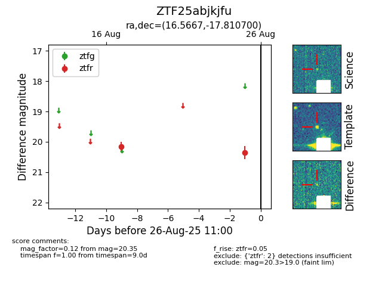

Target ZTF25abjkjfu at 2025-08-26 11:00, see:
FINK: fink-portal.org/ZTF25abjkjfu
Lasair: lasair-ztf.lsst.ac.uk/objects/ZTF25abjkjfu
ALeRCE: alerce.online/object/ZTF25abjkjfu
alt names
ZTF25abjkjfu (ztf,fink)
coordinates:
equatorial (ra, dec) = (16.5667,-17.81070)
galactic (l, b) = (143.8568,-80.07463)
photometry
last ztfr=20.35
2 ztfr detections
